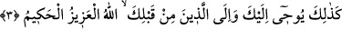
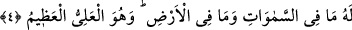
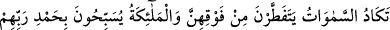
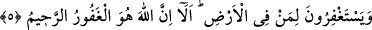

3. Azîz ve hakîm olan Allah, sana ve senden öncekilere işte böyle vahyeder.
Yani bu sûredeki mânâlar gibi “azîz ve hakîm olan Allah, sana” diğer sûrelerde de,
“ve senden önceki” peygamber “lere de işte böyle vahyeder.”
Evet, Allah senden önceki peygamberlere de kitaplarında vahyini bildirmektedir. Öyle
ki sana ve senden öncekilere yapılan vahyin kesiştiği ortak nokta, insanları tevhide yani
Allah’ın birliğine dâvet ile onları hakka, dünya ve âhirette kulların yararına olan
şeylere irşâd etmektir.
Bir diğer mânâ şudur: Bu sûreyi vahyetmesi gibi diğer sûrelerin vahyedilmesi ânında
ve diğer peygamberlere kendi kitaplarının vahyedilmesi ânındaki vahiy gibi, “azîz” ve
“hakîm” olan Allah böylece sana vahyeder. Bu durumda önceki ve sonraki vahiylerin
benzeştiği nokta, vahyin melek vasıtasıyla oluşudur. Burada makam mâzi lafzını
gerektirdiği halde -ki elbette öncekilere yapılan vahiy geçmiştir- vahyin muzâri lafzıyla
ifâde edilmesi, vahyin devamlılığını ve zaman zaman yenilendiğini ifâde içindir. Ayrıca
böyle vahiy Allah’ın âdeti olup bu bir sünnetullahtır. Yine burada mâzi yerine muzâri
lafzının getirilmesi Allah nezdinde mâzi ve muzarinin bir olduğunu bildirmek için de
olabilir. Kevaşi’de böyle geçmektedir.
Burada azîz ve hakîm sıfatları, vahyedilen (âyetler)in şânının yüceliğini takrîr eden
sıfatlardır. Zîrâ vahiy, kâmil mânâda ilim ve kudret sıfatına sahip olan bir zâtın eseridir.
4. Göklerde ve yerde ne varsa hepsi O’nundur. O yücedir, uludur.
Yani ulvî ve süflî âlemlerde olan her şeyin yaratılması mülkiyeti ve bilgisi Allah’a
âiddir. O’nun şânı yücedir. Mülkü, kudreti ve hikmeti uludur. Yahut O Allah (O’nun zâtı)
akılların O’nu idrâk etmesinden çok yücedir. Çünkü onun zâtı gibi başka hiçbir zât
yoktur. Yine O’nun sıfatları gibi başka sıfatlar yoktur. Onun ismi gibi başka isim yoktur.
O’nun fiili ve işi gibi başka fiil yoktur. O öyle yüce bir zattır ki; O’nun zikrinin yanında
O’ndan başka her şeyin vasfı küçük kalır. Kullar arasında peygamberlerin ve onların
vârisleri olan âlimlerin şânı yücedir. Mesela; bir ümmetin nezdinde onlara gönderilen
peygamberin şânı yücedir. Müridi nezdinde şeyhin şânı yücedir. Öğrencisi nezdinde de
üstâdın şânı yücedir. Mutlak olarak şânı yüce olan zât ise yalnız Allah Teâlâ’dır.